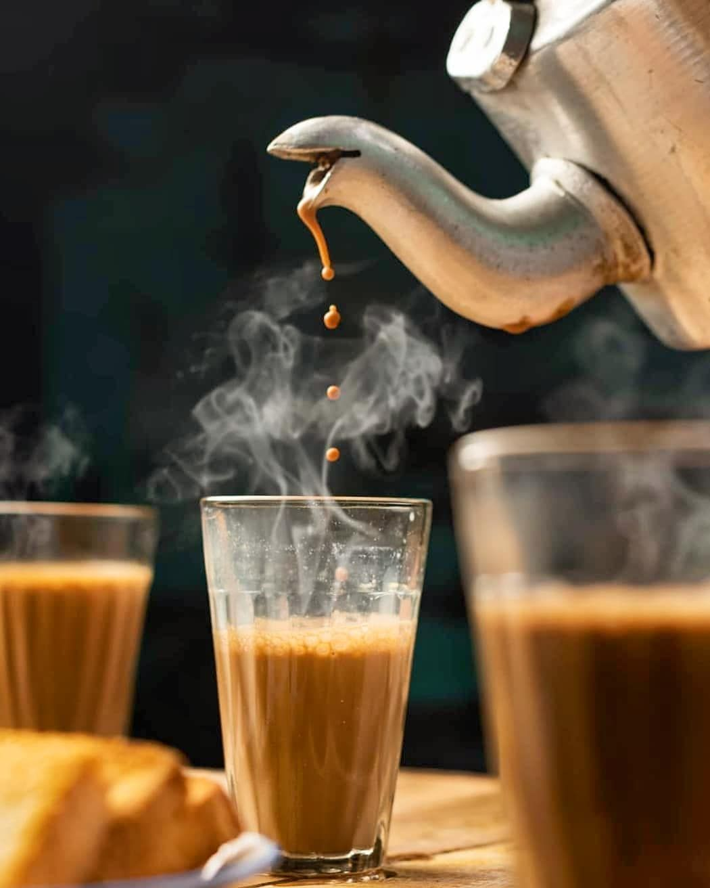

Food Item Details
| Food Item |
Ingredients |
Type |
Protein (g) |
Calories |
|  |
Milk, Tea Powder, Ginger |
Vegetarian |
12 |
250 |
 |
Flour, Aloo, Tomato |
Vegetarian |
20 |
300 |
 |
Chicken, Rice, Cerals |
Non-Vegetarian |
20 |
300 |
Making Tea
- Boil water in a pot.
- Add tea leaves and Sugar.
- Let it simmer for a few minutes.
- Strain the tea into a cup and add milk if desired.
Making Paratha add Aloo Curry
- Knead the dough for paratha and let it rest.
- Roll out the dough and cook on a hot griddle with oil or ghee.
- For aloo curry, onions, tomatoes, and spices in a pan.
- Add boiled potatoes and cook until the curry thicknes.
Making Biryani
- Marinate the meat or vagetables with spices and yogurt.
- Cook basmati rice unit it's 70% done.
- Layer the marinated meat vegetarian and rice in a pot.
- Cook on low heat(dum) until fully cooked.